Report: Dyalog 2003 Conference
Vector 20:2, page 44
Background¶
It is really only out of a spirit of loyalty to the old SigAPL conferences that Dyalog have been resisting pressure for an APL2000-style users’ meeting. Now that the old APLnn annual conference has finally died, they can go ahead with a clear conscience and run a simple, focussed, commercially-oriented gathering for their own community.
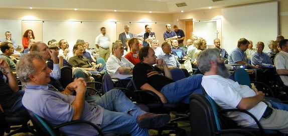
As you can see, it worked! Lots of people came, from lots of countries. Everyone had a really good time, there was some decent technical content, and a broad selection of ‘how we used APL to save/make $xxx’ papers from users. The flat fee of £600 was actually quite good value, as it covered accommodation (full board) as well as the conference itself.
Location¶
I still have no real idea where the conference was. My geography of anything South and West of London was already hazy, but the experience of driving back, turning onto the A3 towards London (heading just North of East) then choosing M25 West left me well confused. Anyway, it was in a nice (mostly Victorian fake) fantasy castle somewhere in deepest Surrey. If you have heard of Occam’s Razor, then you would have relished the association with the nearby village of Ockham, and students of computing history will have been delighted to tuck in to the conference banquet in a hall decorated with the arms of Byron and Lovelace:
|
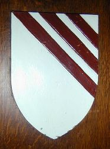 Argent 3 bendlets enhanced gules (Byron) |
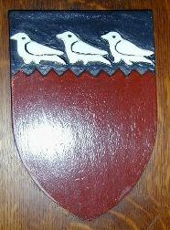 Gules on a chief indented sable, 3 martlets argent (Lovelace) |
Lovers of formal languages and obscure notations might also be interested in the blazons (heraldic descriptions) of the two most interesting coats of arms. Was the Royal College of Heralds the true originator of object-oriented design?
The receptions, barbecue and banquet were held in and around the ‘old’ part of the building; the modern purpose-built conference centre was nicely hidden away in the stable block, and provided most of the rooms, the restaurant and plenty of comfortable sitting-out and relaxing areas. It did have some pretty funny tunnels (looked like the sort of place you might find a total perspective vortex if you took a wrong turning ...) and the usual lack of signposting. However I think everyone found the rooms in time, and once there, the chairs were comfortable, the pens worked, the aircon was only a bit too noisy, and the PA could be turned off at the first hint of howlround.
As always with these events, there was too much food and plenty of wine and beer (even Pimms on the first night), most of which was free courtesy of someone or other.
Conference Highlights¶
So what did I get out of it? I think the major benefit was meeting quite a surprising number of RainPro and NewLeaf users who are in my card-index, but are otherwise just names and licences. Now that they know who I am (just another harmless APL nut, like the rest of them) they will be much more likely to phone up and complain when something doesn’t work quite right.
The average age of the attendees was encouragingly low, and it was the young folk who were starting to agitate for some serious object-oriented capabilities ‘native in the interpreter’. This is good - control-structures finally kicked their way into APL due to pressure from ‘modern’ programmers and objects can do the same.
The talk from Peter Pichler and Svante Lewald was the most wonderful foil to Stephen Taylor’s masterly exposition of the principles of XP. Here we had a classic example of rapid APL development, using all the good habits APLers have acquired over the years, followed by news that at least some of the programming community at large is beginning to get the message. The audience gave Stephen some very serious attention, and I can see why. If we can re-badge ourselves as long-time XP practitioners (instead of the followers of an obscure greek language that executes backwards) then the road to mainstream acceptance suddenly opens up. A long-shot but worth a try.
Conference Programme¶
The basic shape of the conference worked very well. On the first day we simply had end-to-end plenary sessions, with substantial user-presentations (each user had 90 minutes to describe and demo their work) and some light relief from John Daintree at the end of the day. Days 2 and 3 were split between a cycle of workshops (each repeated to keep numbers sensible) and shorter technical presentations.
One excellent idea (APL2000 please copy) was a web-based submission of up to 3 ‘favourite enhancement ideas’ per delegate. These were printed and distributed with the conference packs, each given a ‘developer cost’ on a scale of 1 (trivial) to 100 (serious work for someone). Delegates were allowed to vote for as many as they liked, providing that the total vote did not exceed 100. We all came together for the wrap-up at the end, where the votes were revealed and the developers could add their own comments. It all made for a very interactive and enjoyable final session.
Day-1 – September 3¶
Welcome and Introduction from Peter Donnelly¶
Pete explained why they had resisted calls for an independent users’ meeting, until at last it had become clear that the annual SigAPL event was no longer supporting “our” user community. He also explained the change of name from Dyadic to Dyalog Ltd.
“Dyadic/Dyalog have been in the APL business ‘for ever’ and have been selling hardware for 10 years or so, initially simply as a convenient way to ship our Unix APL systems. The APL world may be unaware of it, but Dyadic has become one of the leading suppliers of IBM RISC hardware in the UK. For various reasons, it became increasingly difficult to manage both parts of the business effectively, and we decided to split Dyadic into two separate entities, transferring the Dyalog APL business to a new company, Dyalog Limited. As a result, John Scholes and I are now able to devote 100% of our time to Dyalog APL”
Clearly, Pete was delighted to see such strong support from his users, and could take away a very positive feeling from the ‘kick off’ of the new company. We even got a souvenir Dyalog mug (sadly duck-free) to mark the event.
APL in Research at ExxonMobil by Steve Levine¶
Organic chemistry was never my strong subject, but I think that if someone had taught it with Mobil Research’s brilliant matrix model of reaction chains, I would have understood an awful lot more.
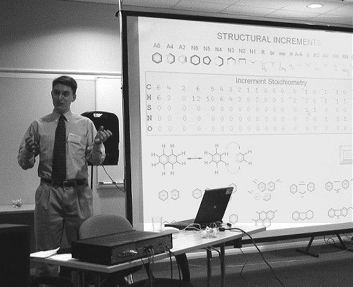
This was one of those talks we will never see in detail in Vector – much of the more proprietary technical material was understandably excluded from the talk. However, from an APLers point of view, one of the most hopeful signs was the emergence of a strengthened APL group from the merger between Exxon and Mobil.
From my own rather sad memories of the Nestlé absorption of Rowntree (and the slow death of the Rowntree APL group that followed) I felt a genuine concern for the APL community in Mobil Research when I heard of the ExxonMobil merger. Actually the opposite seems to have happened – Steve came from the Exxon side (he is a chemical engineer first, and an APLer second) and had previous experience of Fortran modelling, and LP optimisation.
Interestingly, Steve initially saw APL as a step back into the 60s, even from Fortran. Now he is an APL enthusiast, and is happy to carry the flag for a refinery modelling tool which already saves ExxonMobil many hundreds of millions of dollars every year in crude oil costs, and can be expanded to work within the far larger asset-base of the joint company. The basic problem is down to finding the right mix of crude to allow a refinery to ‘crack’ out what the market demands in gasoline, kerosene and so on. The way to do this is to be able to associate the parameters required by the final product (expressed as measurables like viscosity, octane rating, lo-sulfur rating) with the chemistry of the cracker output.
Then you need to model as exactly as you can the sequence of reactions that split up those naphthas, open up those rings, snip apart the paraffin chains to get from what you have to what you need. Finally you must associate the measurables of your various crude supplies with the required chemistry of your inputs and (hey presto) you can choose a selection of crudes which will let you operate the refinery with less waste, less energy and less catalyst. It all relies on a wonderfully neat APL reaction model, some APL-generated Fortran code which does the heavy lifting, and a brilliant user-interface designed as a sequence of plant diagrams with everything in terms the engineers understand.
As the oil gets scarcer and crude prices keep rising, the APL code in this model is going to get ever more business-critical. This system is well-conceived and very well supported for the simple reason that it delivers value that nothing else could. It should be around for a long time to come. As you can tell, I was mightily impressed.
Simcorp Dimension by Frederik Jensen¶
Simcorp were actually Dyadic’s first big customer. Back in 1984 Frede Hansen saw Pete Donnelly at Helsinki and commented “interesting product – if you’re in business next year we might buy it”. The next year he said much the same, and in 1986 he bought it. Now Simcorp Dimension is used by over 100 investment companies across the world, and a team of 70 Dyalog programmers maintain nearly 700,000 lines of code.
Frederik started with the inevitable corporate PowerPoint, briefly showed us around the finished application and then focussed on some specific technical stuff of real interest to his audience.
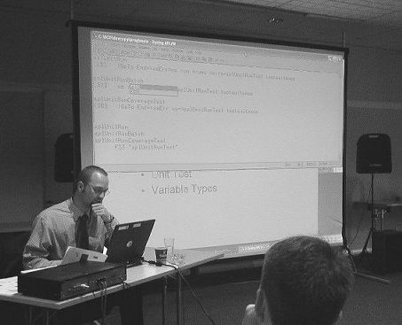
One immediately obvious thing was the huge benefit of the autocomplete capability introduced with Dyalog10. The SimCorp codebase predates namespaces by many years, so everything is carefully organised by prefix. Even with some thousands of functions in the root namespace, it was quick to find the right one to edit with just a few characters of typing and a click on the drop-list offered by the session.
The source code management is simple and powerful (master copies are held on component file, as always) but seemed to me to actually help the programmer in finding and fixing code, rather than getting in the way, as so many similar systems seem to.
The TakeCare system for hospital administration by Peter Pichler and Svante Lewald¶
The conference programme says (with masterly understatement) “the authors will discuss the system architecture and describe the unique features provided by the system”. 10 years ago, Peter dreamt of a unified healthcare administration system for Sweden. As you will see, the TakeCare system he has devised is well on track to become just that.
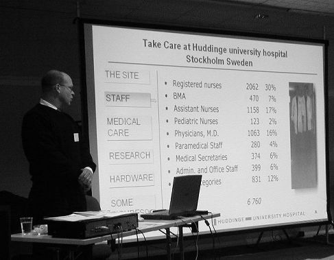
As it stands today, TakeCare supports the entire hospital administration of a substantial healthcare operation (pharmacies, doctors and nursing care, as well as the main hospital group) in the Stockholm area, with several hundred concurrent users running Dyalog APL desktop clients supported by a major Unix installation communicating via TCP/IP. Here are a few stats:
- 8,500 registered users
- 1,700 socket connections
- 25 server calls per second
- 700,000 medical records
- 100,000 EDI messages processed per month
- 4 million financial transactions per year
- better than 1 sec response time
The key to success has been a ruthless pursuit of simplicity, and a strictly user-centred approach to implementation. They started with something simple, implemented it well, and gradually increased coverage without ever outgrowing the fundamental architecture. Now they are well in sight of the original dream of creating a standard healthcare system for Sweden, simply by being the best and showing the way. The way they organise the ‘database’ is typical of their approach. In Sweden everyone has a unique serial number, for example I would be identified by the magic code 19530321nnn being the nnnth birth on this day. In TakeCare the patient record is a simple component file, with one file per patient, the file named from the patient number.
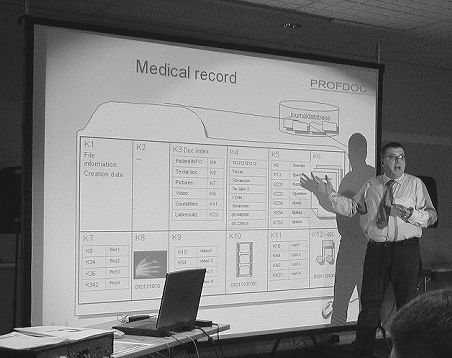
Extending the system to accept new information is simple, and the whole database scales effortlessly. When asked about deletion of old records, Peter shrugged and pointed to the way disk size is doubling every year. Just let it grow!
Note that component K2 is unused. Why? Who knows, and who cares? If it does no harm, just let it go and move on – if there was ever a paradigm for eXtreme programming in action, TakeCare is it. I wish we had a video of Peter’s lovely hand gesture to illustrate “.... we just typed .... “ as he illustrated their response to yet another outrageous request from a user. It spawned numerous imitators during the conference, but no-one did it half as well. Oh (readers beware, Causeway plug coming up) they rely totally on NewLeaf for their reporting.
Sofia shown by Carlo Spinnici and Stefano Lanzavecchia¶
Sorry, Carlo – I really cannot resist this one ...
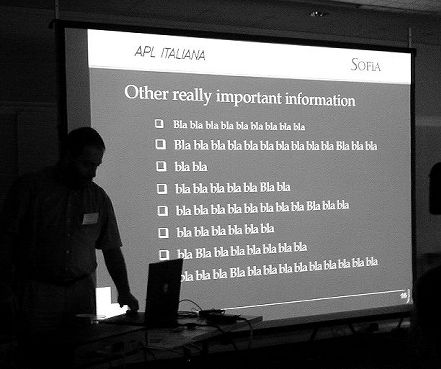
Carlo very sensibly dived through the history quite quickly, and got on with showing us the system itself. To summarize very briefly, Sofia has grown from a small back-office system in a small insurance company to the point where they now have 80% of the Italian market, and are closing fast on that last 20%. The system has grown through the DOS phase, moving to Dyalog, but (as ever) retaining huge tracts of legacy code and DOS-style interface.
The first sign of success – when Carlo noticed a job advert for an insurance administrator with “Experience of Sofia” in big letters in the middle. As he put it: “To be a Sophist is now a job in Italy”.
Stefano took us through the technical side of the way APL Italiana have exploited Dyalog’s multi-threading capability to make a responsive server for their recent move to a distributed architecture.
It’s a Mad Mad Mad database by John Daintree¶
This one needs the author to write it up himself. Let’s use references to arrays of unnamed namespaces to store a vast catalogue of CD information and just treat )SAVE as our file system. It has a lot going for it – I want to see some of that code again when I am awake. JD please note! [Thanks John – see p.70]
Reception and Banquet¶
Plenty of late-evening sunshine, plenty of Pimms, and a decent meal. And time for our first caption contest ...
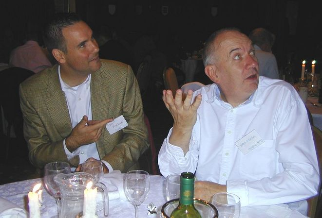
Just what is John Scholes describing here? Paul Mansour obviously knows something, but I am sure our readers will have some ideas.
Day-2 – September 4¶
Electricity supply and quality – e-Line described by Tomas Gustafsson¶
Tomas works with Anssi Seppälä on a collection of niche-market applications for the electricity supply industry in Finland. He concentrated on two particular technical aspects of the system he showed. The first was an infinitely scrollable graph – a timeseries of power quality on a timescale from 10 years down to 1 hours, and maybe seconds/milliseconds in the future. The scrolling is driven by the mouse position – hold the button down and move a little way left or right and the chart pans at a velocity proportional to the mouse displacement. Move it a reasonable way off centre and the chart just flies by, and the key thing is that it flies by smoothly. Tomas gets a frame-rate of nearly 40 frames per second on a reasonable graphics card, using raw Windows calls to scroll the window and refresh only as much as is needed. Tomas comments by email:
“I did some frame rate tests on the 2D scrolling chart, and it’s indeed around 40 fps when I have 7 charts visible. Given that each chart reacts on 40 Expose events during one second, and each event is handled by almost 300 lines of APL code, we get a throughput of around 80000 lines of APL code per second. Taking conditionally excluded lines into account, there should still be around 65000 lines per second of float crunching remaining to execute (inclues all WinAPI & GDI). I find myself sitting here amazed by that fact again and again, even though this laptop is a highend one with a 3.06 GHz CPU. Minimizing the data really pays off!”
He also showed an experimental interface to a freely available 3D game engine (Revolution3D) which is a powerful DLL covering DirectX, where all the calls are available from APL (unlike many such engines) and “It’s a real joy to get into its more advanced features”. Again this looked really smooth in operation, rendered as nicely as OpenGL and seemed much easier to drive. Hopefully Tomas will document the code for us in detail one day.
Inquisitor by Paul Grosvenor (Optima)¶
Hands up every APLer who has written something like this in the past! Kimmo has one called Tabla, my old Rowntree mainframe stuff was called Tabman, and so on. This felt like the classic data enquiry and presentation tool, written for a particular client (pharmaceutical in this case) and desperately trying to become less industry-specific and more approachable by users unfamiliar with its interface quirks. I hope it makes it, but (like all the others) it has a tough challenge on its hands. Let’s see if it’s back next year with a nice customer-list at its back.
APL at DATEV by Dr Gunter Roche¶
DATEV is Germany’s #1 supplier of software to tax consultants, and they have a huge APL operation. Dyalog is mostly used in research projects, and Dr Roche concentrated on some interesting discoveries with Dyalog.NET and external data.
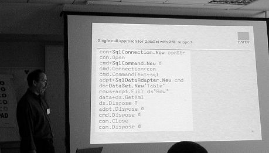
He has been working with XML data, and with various strategies for parsing or generating XML documents from APL. He has also made some timing experiments with ADO.net, and showed how much speed-up you can get by sharing the workload between APL and a few simple fragments of C#.
The typical problem is that most of the ADO calls (such as fetching data from tables) work row by row. Basically they are designed to be run from compiled code, and reading a big table from APL is extremely simple and extremely slow. The long-term answer may be to wait for Dyalog to include native database support in the language – the short-term answer is to write a simple bridging DLL in C# which can hammer round the loop and hand back a decent block of data to APL in one call.
The timing differences were spectacular, and I hope that when DATEV get this code up to production quality, Dr Roche will be willing to share it with the rest of us (see Morten’s Library proposals a little further down these notes).
Reporting Solutions with RainPro and NewLeaf by Adrian Smith¶
This was a pretty unstructured ramble through the possibilities of SVG (gradient fills, animations) and PDF (multi-page reports with outline trees and internal links). Mostly designed to trigger ideas for more imaginative use of charts and reports on the web. Someone else may want to write this one up for me!
Mapped Files in Practice by Veli-Matti Jantunen¶
This was a bit of a disappointment, mainly due to unfortunate scheduling. Veli-Matti was (for some reason) given a full 90-minute session to himself. He correctly realised that he could not talk about mapped files for an hour and a bit, so added a bit of padding to the front (a history of Statistics Finland, and so on), followed with a description of a nice piece of in-house software call PXEdit (which I would like to know more about) and let this overrun into the time he should have left for the really interesting stuff about mapped files.
Pity – I really want to know about file mapping and what you can do with it. Someone should write Kdb in Dyalog, just to see if they can! Maybe Veli-Matti can make me feel a little less frustrated by sending us some notes for the next Vector?
CAS and Dyalog APL by Paul Mansour¶
This is a gap in my coverage – I went off to John Scholes’ workshop here. Contributions still welcome.
Day-3 – September 5¶
APL and eXtreme Programming APL and OOPS Panel with Stephen Taylor, Maria Wells, Paul Mansour¶
Snapped over lunch – Stephen is the one in the middle with the halo ...
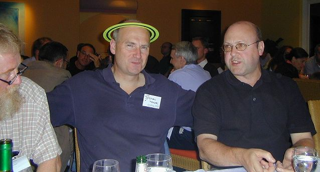
This was a session where the audience listened hard, and contributed more or less continuously with relevent and supportive comments. Stephen basically summarised his XP article in Vector 19.4, with a reference to Kent Beck’s excellent “eXtreme Programming Explained” (the thinnest book that could possibly work) and a selection of well-chosen foils. I particularly liked the comment from Georges Brigham (of QualEDI) that when you ordered a sailboat you could choose any two from Speed, Comfort and Safety. XP recognises that you can attempt to set the Budget, the Timescale and the Features, but in practice you will never control more than two from the three.
Put simply, most APLers have been doing most of this stuff for years. You will recognise quite a lot of it in my Design Handbook (1982) but none of us have been doing all of it all the time. Let’s take what we do well, turn all the dials up to 10, and be proud of it. This is a movement we need to be part of, so go and read the books and give it a go.
The OOPS part of the talk was just a little harder to get to grips with, partly because OOPS is full of daft words like Polymorphism to describe something most APLers do in their sleep.
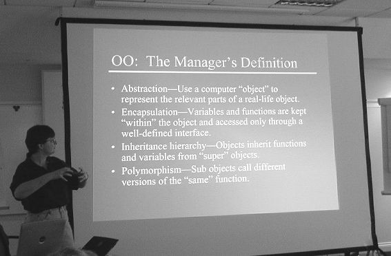
I don’t have any problem with the OOPS principles, or the excellent Design Patterns (Gamma, Helm et al) book – in fact CausewayPro is exactly the Observer Pattern from somewhere near the middle. I just wonder if it makes any sense to graft this stuff onto APL? If I want to write serious OOPS code, I reckon I should follow Richard and write in Java or (better) C# which are built from the little rubber feet upwards with OOPS in mind. My objects could have methods which need to do some serious array stuff – so let’s do that in a pure functional array language which I can call from C#. Now where can I get my hands on one of those ( .... thinks).
Anyway, Paul Mansour’s stuff is really pretty (“The code is so neat is would be a shame to bury it in the interpreter”) and I want time to learn more about it. Thinking purely selfishly, what do I need to make RainPro behave like a class instead of a namespace? Some of it is pretty obvious:
- Encapsulation. Dyalog have accidentally taken a big step towards OOPS by adding autocomplete to the session. However if the developer creates an object called
chand typesch.BI want them offeredch.Barchartandch.Boxplotand a few other bits, but not the entire contents normally reported by'B' ⎕NL 3. They already built most of this stuff to support COM export, so to make the small step of turning a Namespace into a Class can’t be too hard. - Properties. In C# you can say
ch.Heading = "My Chart". I want to be able to make a property, either out of a variable or any arbitrary pair of get/set functions or expressions. A little harder, maybe but not impossible. Then I can do the same in APL, and my RainPro users can benefit from Autocomplete just like my C# users. - Inheritance. OK, you can kinda fake this with
⎕PATH, but it is far too dangerous and has too many funny side effects. A namespace needs a clear list of other namespaces from which to inherit behaviour. This should apply to both methods and properties, so that when you dons1.fooand the interpreter trips VALUE ERROR you are completely in control of where it looks. Another crucial difference from⎕PATHis that it must execute the inherited code in the original object, not in the namespace where it managed to turn it up. In fact if you )cs into an object, I reckon that )fns should show the full inherited function set from the classes in the inheritance tree, even though none of them are ‘really’ there at all. Hmmm etc. Are they editable, or just shadows?
I am also becoming increasingly aware of the importance of the New keyword in C# and other such languages. I don’t think assignment does enough for us here – perhaps we will need to bring in another symbol like the APLX {QuadArrow} to signify the instancing of an object from a namespace, or was that a namespace from a class, I hear you ask?
All of which is probably controversial, so let’s have a good barney about it before Dyalog do something really screwy in the attempt to fix this. Or maybe we just work with Paul’s stuff for a year or two to get a feel for how it works with APL’s oddball scoping rules and other snags we don’t know about yet.
The BCA Chart Editor by Richard Proctor¶
Long ago and far away, I met a materials management system called Logol, written by Bob Brown. It was DOS-based, and an APL development interpreter shipped with every product. The user-interface was simple command line, with some prompted stuff here and there, designed to facilitate ‘enter-bashing’ by the experienced user (which most users were).
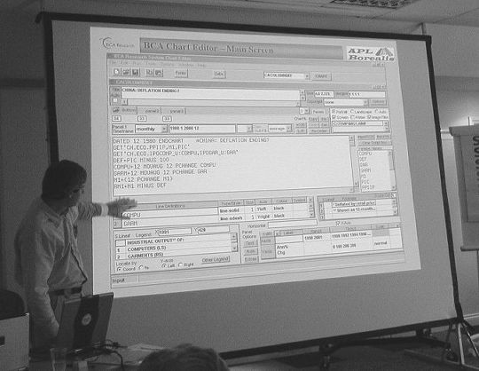
Richard has been attempting to take a workspace full of analytical routines and charting commands (based on the excellent IPSharp ‘SuperPlot’ functions) and build a Gui to replace what the experienced users currently do by typing at the session. As the slide shows, this is a very tough call, and Richard is well aware that not all his users are convinced yet. I have the same problem with GraPL (desktop) – is it really that much easier to build charts in a Gui environment than in a decent code-editor which autocompletes for me?
I think my answer is ‘yes’ – just. I now prefer to work in GraPL, rather than at the 6-space prompt in the Rainpro workspace. If I had just a little more control over autocomplete (see previous notes) I might well swing back. For expert users, Notepad is a pretty good development environment for almost anything.
The BAA Utility Library by Morten Kromberg¶
Again, most of Morten’s excellent talk was outlined in the last Vector; what was new was a firm emphasis on collaboration, and specifically online collaboration:
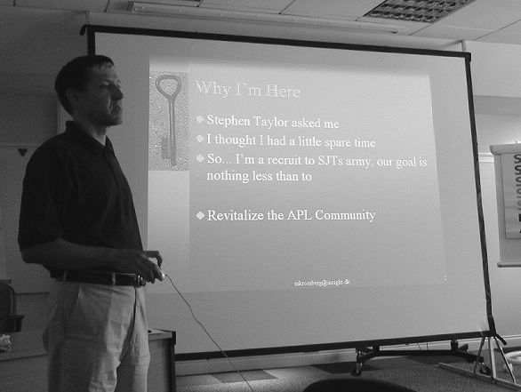
I think that what emerged from the discussion was that to be effective, a library needs to grow organically, and not simply be a bunch of useful code assembled by one author, however well-intentioned.
The internet gives us a chance, and we can start by continuing these discussions on the Vector wiki (accessed from the Vector front page until) and the Yahoo discussion group set up by Stephen Taylor. It is in everyone’s interest to move this along – the first thing any project manager will check when contemplating hiring an APLer or an APL team is “what is the online support like?”. Let’s make sure there is something out there for him to find.
ZIMMERER – notes by Michael Zippel¶
ZIMMERER is tailored for craftsmen (they are called “Zimmermann” or “Zimmerer” in German)building timber frame houses and roofs. The first version was sold in 1988: MicroAPL-based running on Atari-Computers (at 8 Mhz!). A Windows-Version (DyalogAPL) was introduced in 1993.
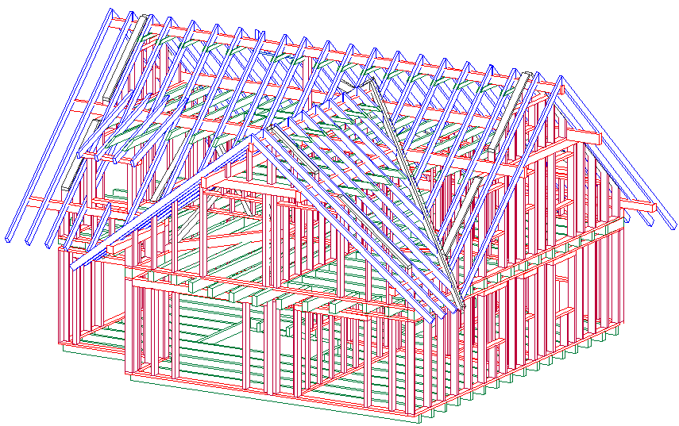
ZIMMERER attempts to satisfy the software-needs of a typical small business, all integrated in one piece of software:
Tender:¶
- rapid entry of “in-about” construction
- lists of all items required for bidding
- formal printouts
Construction:¶
- Starting with macros
- “visual” elaboration of details in CAD-style:
- Each individual beam can be modified
- Groups of beams can be modified in an uniform way
- Openings (e.g. for chimneys or windows) can be set in one pass
- Connections between different types of beams and/or different parts of the roof (Lap Joints, Tenon, Mortise, Drillings) can be set.
- Colliding beams can be fitted.
- The overall Contour can be modified and beams fitted into it.
- Produces 10 different technical plans with all required measurments,
- 3D-graphics (choice of vector graphics with hidden line detection – ideal for high res printing; or pixel graphics using OpenGL – ideal for visualisation)
- Allows interfacing with other systems, including various brands of CNC-Sawing Machinery (via DXF and custom formats)
Billing:¶
- provides lists needed for billing: lumber cut and other material
- standard price tables and invoice writing (using RichEdit with RTF-templates)
ZIMMERER has a live-update feature included, to download a patch-workspace.
Compare by Paul Smith¶
I missed both of these for another workshop. Submissions for this slot welcome!
Enhancements and Future Plans by the Dyalog team¶
Time for another caption contest (sorry John) ...
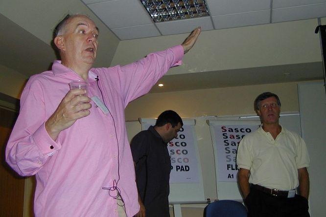
This was where the votes were revealed, and the top few enhancement requests chewed over and spat out by the developers.
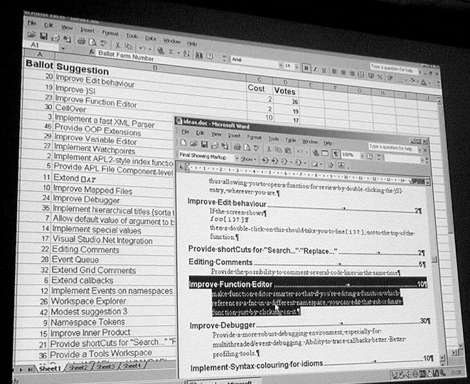
The top two were really low-cost (improving )SI simply involves adding #. to the front of what it currently shows) and the change to the function editor would be voted for by anyone with a WSLoc utility which searches out calling lines.
The highlighted entry needs explanation – if you rely on ⎕PATH to locate your utility set, then it is frustrating in the extreme that you can’t edit a utility function with a simple double-click in the caller. Thinking back, this was one of the reasons I decided to avoid ⎕PATH altogether in my code. Of course this is non-simple as the current path could be localised, so where to go may depend on the calling stack.
The request for a CellOver event on the grid was another low-cost improvement, but the request for a fast XML parser rapidly evolved into a vigorous discussion, which clearly means someone needs to do some experiments. OOP extensions were the same only more so. Watchpoints got another strong discussion, as did component-level locking. Adding the APL2 ⌷ indexing was readily accepted by everyone, which is about as far as we got!
WrapUp¶
Peter thanked us all for coming, and the audience gave the entire Dyalog team an enthusiastic and prolonged round of applause for all their hard work. Next year, they will have it all to do again, and most of us will be back.
Well done all round.